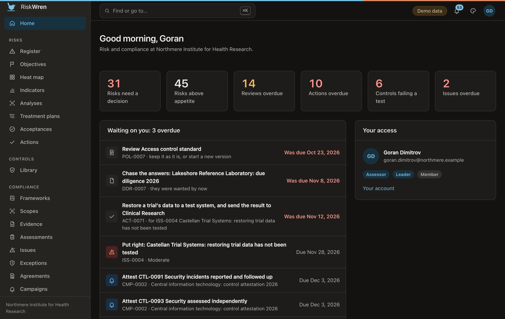

Getting started
This guide takes you from nothing to a running RiskWren that your organization can sign in to. It is for whoever installs it and sets it up. Allow about fifteen minutes.
If you only want to look around first, skip to Explore the demo organization.
What you need#
- uv, which provides the right Python (3.12 or later).
- A copy of this repository.
Every command in these guides is run through uv run riskwren … from the repository directory. The full list is in the command reference.
Install#
uv syncSet up the installation#
uv run riskwren initinit does five things:
- Writes
riskwren.toml, the deployment settings, in the current directory. - Creates the data home,
./var, which holds everything that is not in the database. - Creates the database. With no other setting, this is a SQLite file inside the data home.
- Loads the default program: nine families of risk with an appetite for each, a scoring method with defined scales, review cadences, the table of who may accept what, a library of 57 common risks, a library of 75 common controls, and four public frameworks (the NIST Cybersecurity Framework 2.0, NIST SP 800-53 Rev. 5, NIST SP 800-171 Rev. 3, and the HIPAA Security Rule) with the common controls already mapped to them.
- Asks for your email address, your name, and a password, and creates the first administrator.
The password needs at least 12 characters. Length matters more than symbols: a few unrelated words make a good one.
init is safe to run again. It leaves an existing configuration file alone, adds only what is missing from the program, and creates an administrator only if there is none.
To set up without being asked anything, name the administrator and pipe the password in:
printf '%s' "$ADMIN_PASSWORD" | uv run riskwren init \
--admin-email you@example.org --admin-name "Your Name" --password-stdinCheck it#
uv run riskwren doctordoctor checks the configuration, the data home, that the database answers, that its schema is the one this version expects, that the database still refuses changes to the history, and that the history verifies. It exits with 1 if anything must be fixed.
Run it#
uv run riskwren serveThe server prints its address, by default http://127.0.0.1:8000. Use --port to pick another port.
serve refuses to start in three cases, and says what to do in each:
| It says | Do this |
|---|---|
| The database schema is behind | uv run riskwren db upgrade |
| There is no administrator yet | uv run riskwren users add you@example.org --name "Your Name" --role admin |
| The port is already in use | Stop what is using it, or pass --port |
As installed, RiskWren listens only on the machine it runs on. To put it in front of other people, read Configuration first.
Sign in for the first time#
Open the address in a browser and sign in with the email address and password you gave init.
RiskWren signs in with local accounts: an email address and a password that it keeps. Nothing else has to be installed or connected. Signing in with your organization's identity provider, such as Microsoft Entra ID, is optional and can be added at any time: see Single sign-on.
- Five failed attempts within fifteen minutes stop sign-in for that account from that address for a few minutes.
- A sign-in ends after 12 hours without activity, and after 7 days in any case. Both are settings.
- To change your password, open the account menu at the top right and choose Your account. Changing it signs out your other sessions.
- If you cannot sign in at all, reset the password from the command line:
uv run riskwren users reset-password you@example.org.
Set up the organization#
The administrator account sets the installation up. It does not assess or accept risk: that belongs to the roles below, and an administrator who also does that work is given a second role.
Units#
Admin → Units holds the organization as a hierarchy of any depth: divisions, departments, labs, cores, clinics, offices. Every record belongs to a unit, roles can be limited to a unit and everything beneath it, and figures roll up the tree. Give each unit a short code; imports and the command line refer to units by it.
People and roles#
Admin → People adds accounts and gives them roles. A person with no role is a member: they see what they are named on, and their own unit's register if the program allows it.
| Role | What it is for |
|---|---|
| Manager | The risk and compliance team. Edits any record, shapes the program, reads everything. Can be limited to a unit |
| Assessor | Assesses risks and rates controls they do not own. Can be limited to a unit |
| Auditor | Reads everything, including the full history, and changes nothing |
| Leader | Leads a unit. Sees it and everything beneath it, and may accept risk in it up to a limit set on the role |
| Steward | Keeps a unit's records: adds and edits its processes, systems, third parties, risks, and controls |
| Admin | Accounts, units, appearance, and system settings |
A leader's limit is the highest rating they may accept: moderate, high, or critical. Running the program explains how it is used.
Import units and people#
Both screens take a CSV file, which is the quick way to load an organization. Each import can be run dry first and reports every problem by row, so nothing is half-loaded. The import dialog shows the columns it expects.
Appearance#
Admin → Appearance sets the product's name, your organization's name, a logo, an accent color, the default palette, and how ratings are colored. See Running the program.
Explore the demo organization#
To see RiskWren with data in it before you set anything up, build the demo:
uv run riskwren demo # builds ./demo
uv run riskwren --config demo/riskwren.toml serve # runs it at http://127.0.0.1:8020The demo is the Northmere Institute for Health Research, a fictional research institute with an outpatient clinic and two years of history: 60 units, about 210 people, 230 processes, systems, third parties, and information assets, 180 risks, and about 135 controls, with their assessments, ratings, plans, and acceptances. Three scopes are held to frameworks: central information technology, which provides controls; the clinical systems, under the HIPAA Security Rule; and a controlled-access data enclave, under NIST SP 800-171. Both inherit from the first. There is an assessment in progress, evidence at every stage of freshness, a dozen issues from raised to closed, and exceptions waiting, in force, and ended. Nothing in it is real, and every record was made by the same code the app uses, so its history verifies like any other.



Its sign-in page offers ten sample people and asks for no password:
| Sign in as | To see |
|---|---|
| The risk manager | The whole register, the dashboard, the heat map, and records that have lost their owner |
| The steward of the Biospecimen Repository | A unit's inventory and risks, and a critical risk brought to high by controls, with its plan |
| The unit leader | A leader whose limit is moderate, and a high risk they were not allowed to accept |
| The division leader | Acceptances given, one of them expiring next month |
| The executive | The one person who may accept a critical risk |
| The security leader | The compliance dashboard, a critical finding from a penetration test, a closure to confirm, and exceptions to decide |
| The assessor | An assessment in progress: tests to do, a result to review, and the issues the failed tests opened |
| The auditor | Everything, read-only, with the full history |
| The administrator | People, units, and appearance, and no part in the register's judgments |
| A staff member | Home for someone with one action to finish, and only their own unit's part of the register |
riskwren demo --seed 2 builds a different Northmere with the same shape, and --force rebuilds one that is already there.
A demo listens only on the machine it runs on. See Configuration before changing that.
Next#
- To start recording what you have and what could go wrong, read The register.
- To set appetite, cadences, and who sees what, read Running the program.